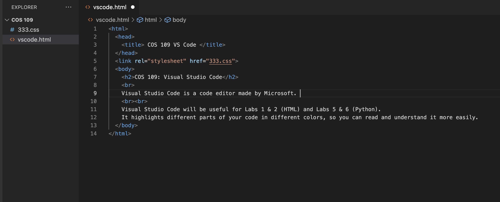

COS 109: Visual Studio Code
Visual Studio Code is a code editor made by Microsoft. It is the most popular code editor
among developers. It works on both Windows and macOS.
Visual Studio Code will be useful for Labs 1 & 2 (HTML) and Labs 5 & 6 (Python).
It highlights different parts of your code in different colors, so you can read and understand it more easily.
It will also underline parts of the code that don't make sense.

In this example:
-
Tags like <html> are blue.
-
Files and links like "333.css" are orange.
-
Text like COS 109 VS Code is white (I'm in dark mode).
VS Code only takes a few minutes to download and install. Email me (archiem@) if you get stuck with the installation.
Download Visual Studio Code from Microsoft